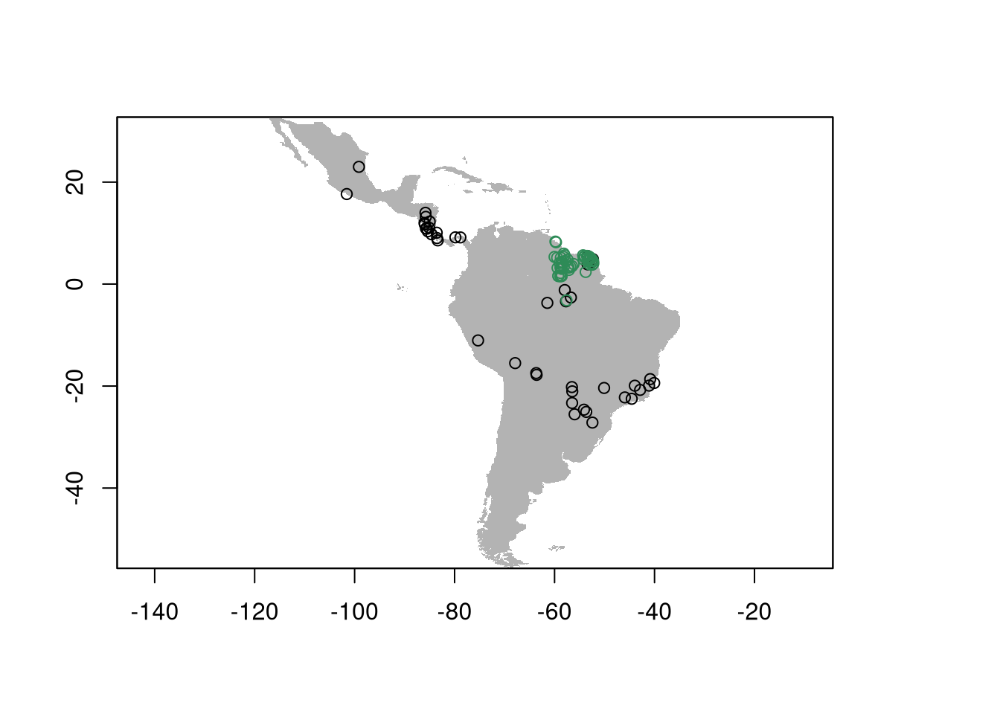
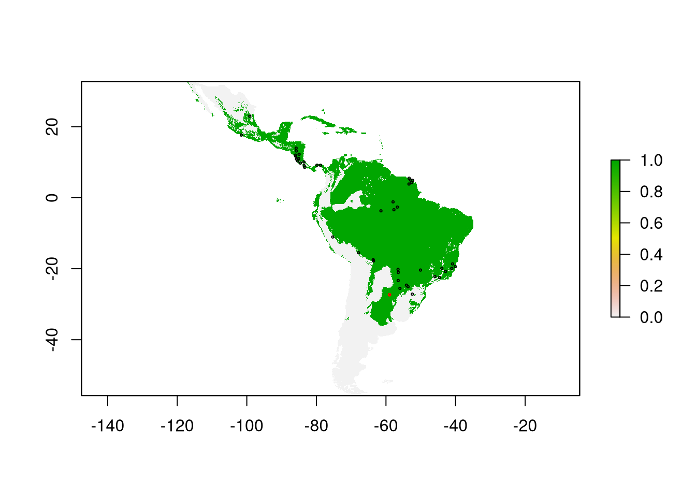
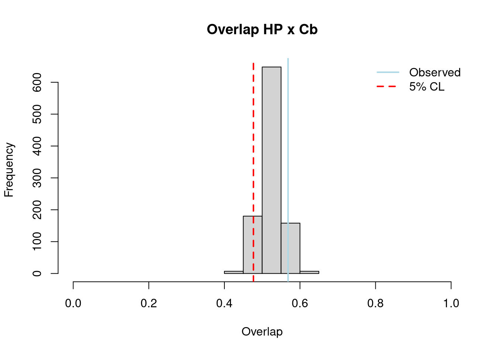
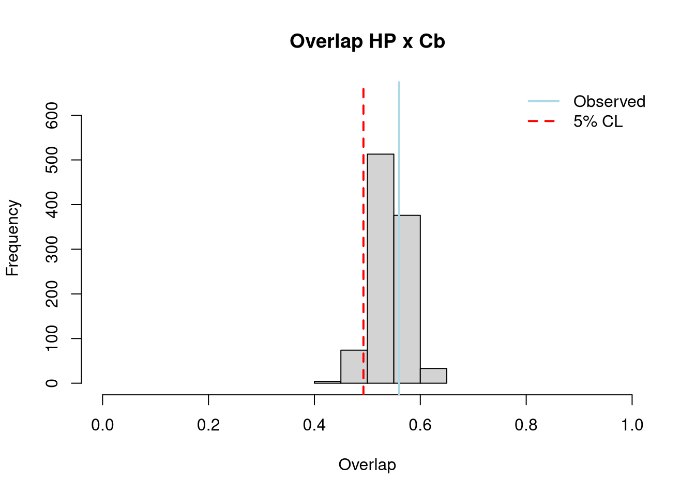
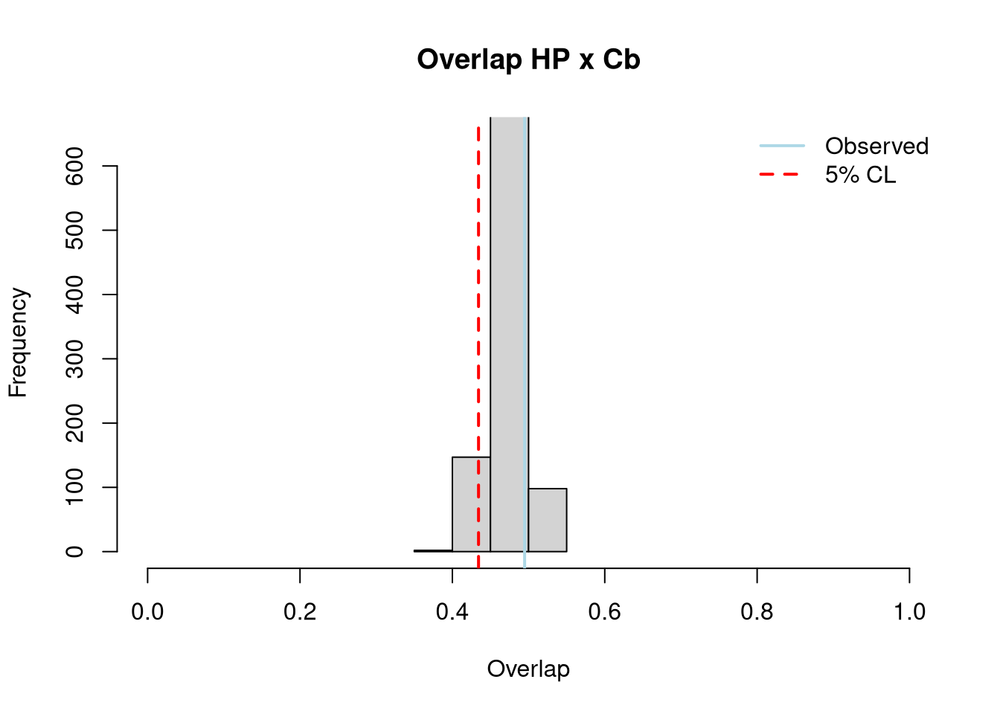
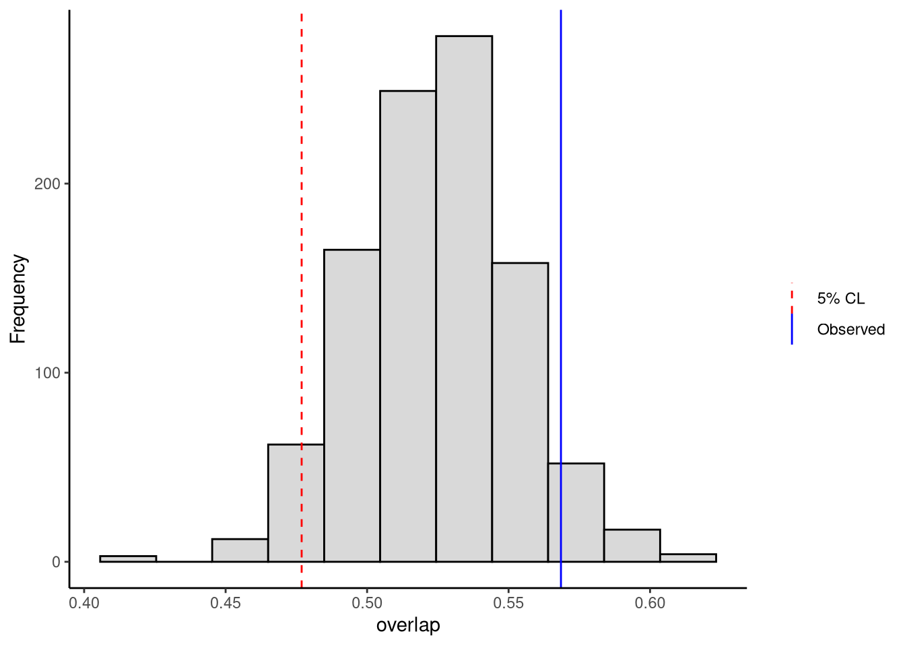
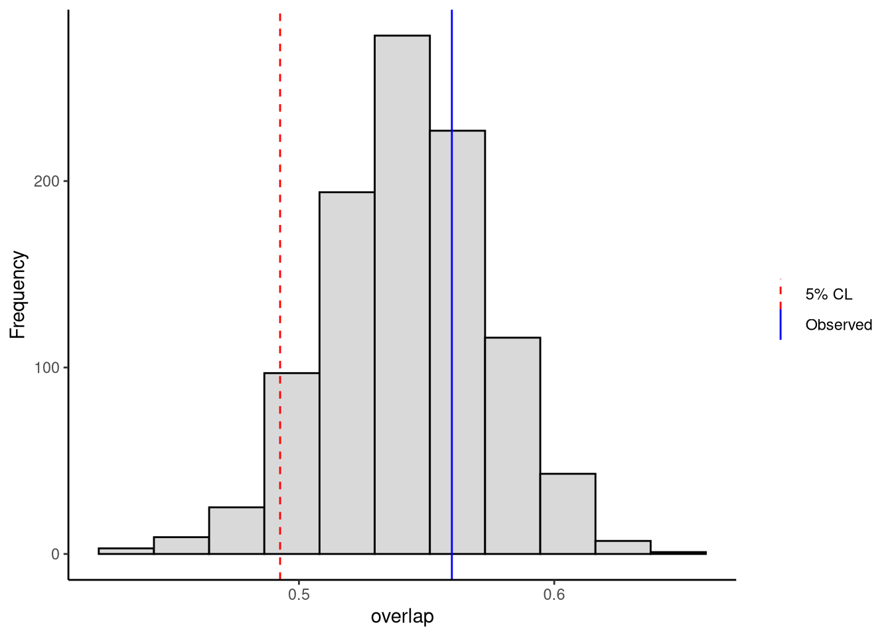
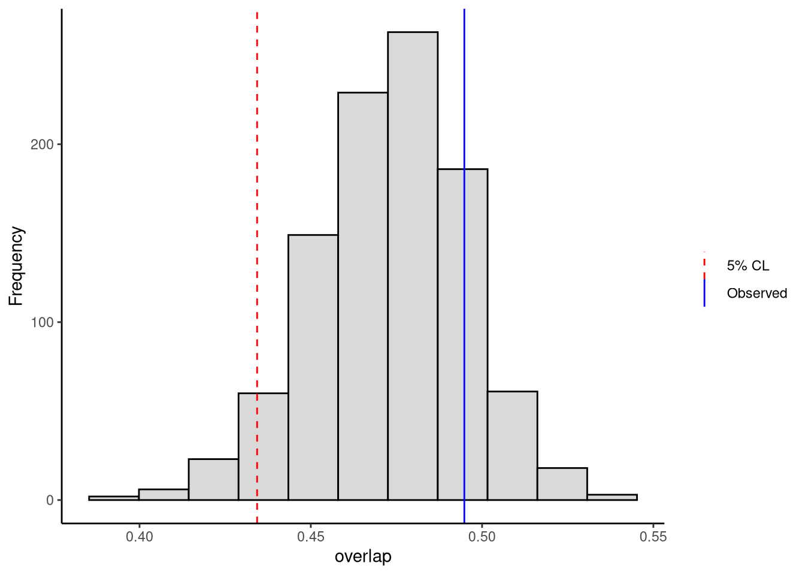
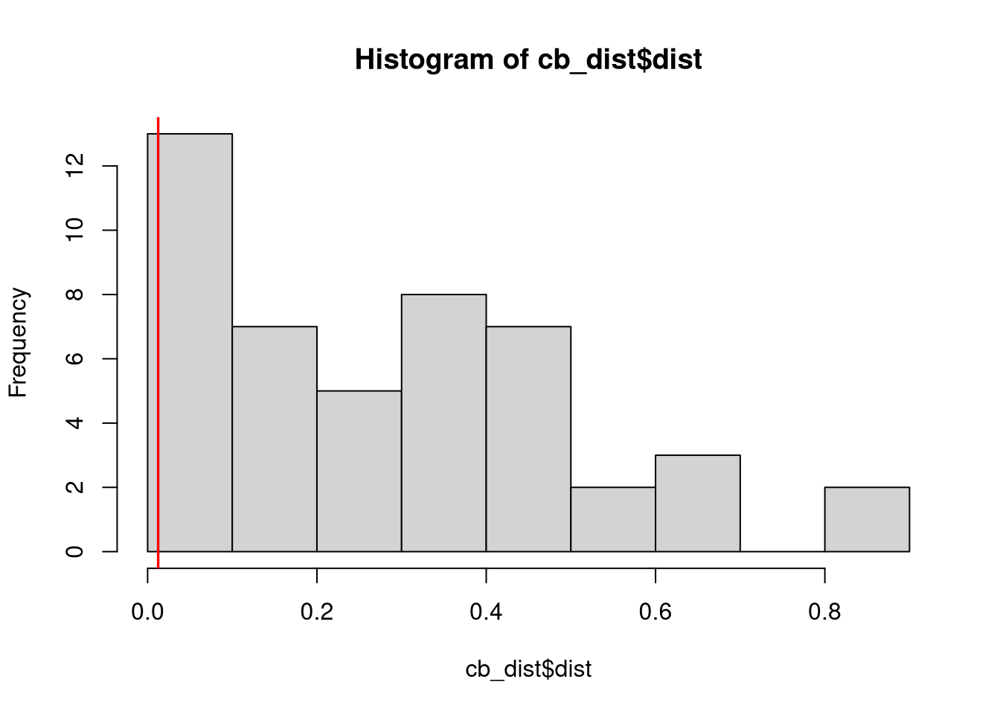
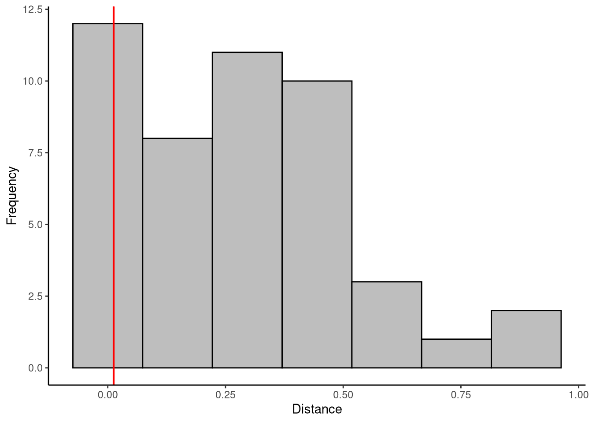

Preparación de datos
# ---- Librerias ----
library(raster)
library(kuenm) # https://github.com/marlonecobos/kuenm
library(ellipsenm) # https://github.com/marlonecobos/ellipsenm/# ---- Cortado ----
cortar_mapas <- function(entrada, shape, salida) {
mapa <- raster::stack(list.files(entrada, full.names = TRUE))
mapa <- raster::mask(raster::crop(mapa, shape), shape)
carpeta <- dirname(salida)
if (!file.exists(carpeta)) dir.create(carpeta, recursive = TRUE)
terra::writeRaster(mapa, filename = salida, filetype = "GTiff")
}
# ---- Limpieza ----
limpieza <- function(datos, region, thin_dist) {
dentro <- data.frame(
datos,
inside = !is.na(raster::extract(region, datos[-1]))
)
dentro <- dentro[dentro$inside == TRUE, ][1:3]
dentro <- dentro[!is.na(dentro$Lat) & !is.na(dentro$Long), ]
unicos <- unique(dentro)
thin_data(unicos, longitude = "Long", latitude = "Lat", thin_distance = thin_dist)
}
# ---- Máscara ----
mascara <- function(ocurrencias, variables, salida, distancia) {
variables <- raster::stack(
list.files(file.path(variables, "Initial"), pattern = "pc_", full.names = TRUE)
)
buffer_oc <- buffer_area(
ocurrencias,
longitude = "Long",
latitude = "Lat",
buffer_distance = distancia
)
mascara <- raster::mask(raster::crop(variables, buffer_oc), buffer_oc)
dir.create(salida)
raster::writeRaster(mascara, filename = file.path(salida, "pc"), format = "ascii", bylayer = TRUE)
}
# ---- Cortado de mapas ----
neot_shape <- shapefile("./data/base/mascara_neotropico/Lowenberg_Neto_2014.shp")
cortar_mapas("./data/base/worldclim/bio_all/", neot_shape, "./data/bio/bio_all.tif")
cortar_mapas("./data/base/worldclim/bio_prec/", neot_shape, "./data/bio/bio_prec.tif")
cortar_mapas("./data/base/worldclim/bio_temp/", neot_shape, "./data/bio/bio_temp.tif")
# ---- Limpieza ocurrencias ----
# Carga de datos
data(l_limpidus)
data(c_fragans)
region_neo <- raster("./data/bio/bio_all.tif", lyrs = 1)
plot(region_neo, col = "grey70", legend = FALSE)
# Limpieza
oc_l_limpidus_neot <- limpieza(l_limpidus[1:3], region_neo, 10)
points(oc_l_limpidus_neot$Long, oc_l_limpidus_neot$Lat)
write.csv(oc_l_limpidus_neot, file = "data/ocurrencias/l_limpidus.csv")
oc_c_fragrans_neot <- limpieza(c_fragans, region_neo, 10)
points(oc_c_fragrans_neot$Long, oc_c_fragrans_neot$Lat, col = "seagreen")
write.csv(oc_c_fragrans_neot, file = "data/ocurrencias/c_fragrans_hp.csv")library(raster)
data(l_limpidus)
data(c_fragans)
oc_l_limpidus_neot <- read.csv("../data/ocurrencias/l_limpidus.csv")
oc_c_fragrans_neot <- read.csv("../data/ocurrencias/c_fragrans.csv")
region_neo <- raster("../data/bio/bio_all.tif", lyrs = 1)
plot(region_neo, col = "grey70", legend = FALSE)
points(oc_l_limpidus_neot$Long, oc_l_limpidus_neot$Lat)
points(oc_c_fragrans_neot$Long, oc_c_fragrans_neot$Lat, col = "seagreen")

Figura 1: Ocurrencias de L. limpidus (negro) y C. fragrans (verde) en el neotrópico
# ---- PCA ----
# Todas las variables
kuenm_rpca(
variables = raster::stack("./data/bio/bio_all.tif"),
var.scale = TRUE,
write.result = TRUE,
out.format = "ascii",
out.dir = "./data/pcs_all",
n.pcs = 3
)
# Temperatura
kuenm_rpca(
variables = raster::stack("./data/bio/bio_temp.tif"),
var.scale = TRUE,
write.result = TRUE,
out.format = "ascii",
out.dir = "./data/pcs_temp",
n.pcs = 3
)
# Precipitación
kuenm_rpca(
variables = raster::stack("./data/bio/bio_prec.tif"),
var.scale = TRUE,
write.result = TRUE,
out.format = "ascii",
out.dir = "./data/pcs_prec",
n.pcs = 3
)
# ---- Máscara ----
pcs <- c("./data/pcs_all", "./data/pcs_prec", "./data/pcs_temp")
for (carpeta in pcs) {
salida <- file.path(carpeta, "l_limpidus")
mascara(oc_l_limpidus_neot, carpeta, salida, 50)
}
for (carpeta in pcs) {
salida <- file.path(carpeta, "c_fragrans")
mascara(oc_c_fragrans_neot, carpeta, salida, 50)
}Construcción de elipsioides
# Definición funcion para leer los pcs generados anteriormente
leer_pcs <- function(carpeta, tipo = NULL) {
carpetas <- list.files(carpeta, full.names = TRUE)
nombres <- list.files(carpeta)
raster_list <- lapply(carpetas, function(x) {
raster <- raster::stack(
list.files(x, pattern = "pc_", full.names = TRUE)
)
names(raster) <- paste0(names(raster), tipo)
raster
})
names(raster_list) <- nombres
raster_list
}
#Definición función para calculo de elipses
superposicion <- function(ocs_hp, ocs_cb, vars_hp, vars_cb) {
nicho_1 <- overlap_object(
ocs_hp, species = "species",
longitude = "Long", latitude = "Lat",
method = "covmat", level = 95,
variables = vars_hp
)
nicho_2 <- overlap_object(
ocs_cb, species = "species",
longitude = "Long", latitude = "Lat",
method = "covmat", level = 95,
variables = vars_cb
)
ellipsoid_overlap(
nicho_1, nicho_2, overlap_type = "back_union",
significance_test = TRUE, replicates = 1000,
confidence_limit = 0.05
)
}
# ---- Elipsoides ----
# Variables
pcs_all <- leer_pcs("data/pcs_all/")
pcs_prec <- leer_pcs("data/pcs_prec/")
pcs_temp <- leer_pcs("data/pcs_temp/")
# Superposición con prueba de significación
overlap_all <- superposicion(
ocs_hp = oc_c_fragrans_neot,
ocs_cb = oc_l_limpidus_neot,
vars_hp = pcs_all$c_fragrans,
vars_cb = pcs_all$l_limpidus
)
overlap_prec <- superposicion(
ocs_hp = oc_c_fragrans_neot,
ocs_cb = oc_l_limpidus_neot,
vars_hp = pcs_prec$c_fragrans,
vars_cb = pcs_prec$l_limpidus
)
overlap_temp <- superposicion(
ocs_hp = oc_c_fragrans_neot,
ocs_cb = oc_l_limpidus_neot,
vars_hp = pcs_temp$c_fragrans,
vars_cb = pcs_temp$l_limpidus
)
dir.create("./output/overlaps", recursive = TRUE)
saveRDS(overlap_all, "./output/overlaps/overlap_all.rds")
saveRDS(overlap_prec, "./output/overlaps/overlap_prec.rds")
saveRDS(overlap_temp, "./output/overlaps/overlap_temp.rds")Proyección del modelo
# ---- Carga de datos ----
# Se agraga un sufijo a cada capa del raster (_all, _prec, _temp)
# dependiendo del conjunto de predictors climáticos.
pcs_all <- leer_pcs("./data/pcs_all", tipo = "_all")
pcs_prec <- leer_pcs("./data/pcs_prec", tipo = "_prec")
pcs_temp <- leer_pcs("./data/pcs_temp", tipo = "_temp")
# ---- Preparación para análisis ----
dir.create("./output/projection_model/splits", recursive = TRUE)
data_split <- split_data(
oc_l_limpidus_neot, method = "random", longitude = "Long",
latitude = "Lat", train_proportion = 0.75,
save = TRUE, name = "./output/projection_model/splits/ocurrencias"
)
# Juntando las variables de cerambicido
# para luego armar los sets
vars_cerambicido <- raster::stack(
pcs_all$l_limpidus, pcs_prec$l_limpidus, pcs_temp$l_limpidus
)
sets <- list(
set_1 = c("pc_1_all", "pc_2_all", "pc_3_all"),
set_2 = c("pc_1_prec", "pc_2_prec", "pc_3_prec"),
set_3 = c("pc_1_temp", "pc_2_temp", "pc_3_temp")
)
sets_vars_cerambicido <- prepare_sets(vars_cerambicido, sets)
# ---- Calibracion ----
metodos <- c("covmat", "mve1")
calibracion <- ellipsoid_calibration(
data_split, species = "species", longitude = "Long",
latitude = "Lat", variables = sets_vars_cerambicido,
methods = metodos, level = 99, selection_criteria = "S_OR_P",
error = 5, iterations = 500, percentage = 50,
output_directory = "output/projection_model/calibration_pcs"
)
res_calibracion <- read.csv(
"./output/projection_model/calibration_pcs/selected_parameterizations.csv"
)
res_calibracion
# ---- Modelo ----
modelo <- ellipsoid_model(
data = oc_l_limpidus_neot, species = "species",
longitude = "Long", latitude = "Lat",
raster_layers = pcs_all$Initial, method = "mve1", level = 99,
replicates = 10, prediction = "suitability",
return_numeric = TRUE, format = "GTiff", overwrite = TRUE,
output_directory = "output/projection_model/model_pcs"
)
# Umbral del modelo
modelo_mean <- raster(
"./output/projection_model/model_pcs/mean_suitability_calibration_L_limpidus.tif"
)
# Threshold del 5%
# Se tomó el valor más bajo recuperado y se utilizó para transformar el modelo en binario.
puntos_cerambicido <- extract(modelo_mean, oc_l_limpidus_neot[-1])
modelo_mean_binario <- (modelo_mean > min(puntos_cerambicido))
plot(modelo_mean_binario)
writeRaster(
modelo_mean_binario,
"./output/projection_model/final_model_thrs_5.tif",
)
data(l_limpidus_nr)
points(oc_l_limpidus_neot$Long, oc_l_limpidus_neot$Lat, col = "black", cex = 0.3)
points(l_limpidus_nr$Long, l_limpidus_nr$Lat, col = "red", cex = 0.3)library(raster)
plot(raster("../output/projection_model/final_model_thrs_5.tif"))
points(oc_l_limpidus_neot$Long, oc_l_limpidus_neot$Lat, col = "black", cex = 0.3)
points(l_limpidus_nr$Long, l_limpidus_nr$Lat, col = "red", cex = 0.3)

Figura 2: Modelo binario con ocurrencias de L. limpidus nativas (negro) y nuevos registros (rojo)
# Crear tabla de especies alien y native de l_limpidus
# ---- Ocurrencias con status ----
l_limpidus_nr$status <- "alien"
oc_l_limpidus_neot$status <- "native"
l_limpidus_status <- rbind(oc_l_limpidus_neot, l_limpidus_nr)
write.csv(l_limpidus_status, file = "./data/ocurrencias/l_limpidus_status.csv", row.names = FALSE)
# ---- Distancia Mahalanobis ----
cb_dist <- data.frame(
l_limpidus_status,
dist = extract(modelo_mean, l_limpidus_status[2:3])
)
cb_dist <- na.omit(cb_dist)
write.csv(cb_dist, file = "./output/dist_mahalanobis.csv")Gráficos
# ---- Librerias ----
library(rgl)
library(ggplot2)
# ---Gráficos ---
# Overlaps
plot_over <- function(overlap) {
plot_overlap(
overlap, niche_col = c("brown1", "deepskyblue"),
data_col = c("brown1", "deepskyblue"), background = FALSE,
change_labels = TRUE, xlab = "", ylab = "", zlab = "", legend = TRUE
)
}
overlap_all <- readRDS("../output/overlaps/overlap_all.rds")
overlap_prec <- readRDS("../output/overlaps/overlap_prec.rds")
overlap_temp <- readRDS("../output/overlaps/overlap_temp.rds")
plot_over(overlap_all)
plot_over(overlap_prec)
plot_over(overlap_temp)
# Histogramas
# La función plot_hist crea gráficos usando R base.
# La función gg_hist lo hace utilizando ggplot2
plot_hist <- function(overlap) {
hist(overlap@significance_results$union_random$Niche_1_vs_2$overlap,
breaks = 5, main = "Overlap HP x Cb", xlab = "Overlap",
xlim = c(0, 1), ylim = c(0, 650)
)
abline(v = quantile(overlap@significance_results$union_random$Niche_1_vs_2$overlap, 0.05),
col = "red", lwd = 2, lty = 2
)
abline(v = overlap@union_overlap$overlap[1], col = "lightblue", lwd = 2)
legend("topright", bty = "n", legend = c("Observed", "5% CL"),
col = c("lightblue", "red"), lty = c(1, 2), lwd = 2
)
}
plot_hist(overlap_all)


gg_hist <- function(overlap) {
datos <- data.frame(
overlap = overlap@significance_results$union_random$Niche_1_vs_2$overlap
)
observado <- overlap@union_overlap$overlap
cl <- quantile(overlap@significance_results$union_random$Niche_1_vs_2$overlap, 0.05)
plot <- ggplot(datos) +
ylab("Frequency") +
geom_histogram(aes(x = overlap), bins = nclass.Sturges(datos[, 1]), color = "black", fill = "gray85") +
geom_vline(
aes(xintercept = cl, linetype = "5% CL", color = "5% CL")
) +
geom_vline(
aes(xintercept = observado, linetype = "Observed", color = "Observed")
) +
scale_color_manual(
name = "",
values = c("red", "blue")
) +
scale_linetype_manual(
name = "",
values = c("dashed", "solid")
) +
theme_classic()
plot
}
gg_hist(overlap_all)


# Mahalanobis
cb_dist <- read.csv("../output/dist_mahalanobis.csv")
hist(cb_dist$dist)
abline(v = cb_dist$dist[cb_dist$status == "alien"], col = "red", lwd = 1)
maha_plot <- ggplot(cb_dist, aes(x = dist)) +
ylab("Frequency") +
xlab("Distance") +
geom_histogram(bins = nclass.Sturges(cb_dist $dist), color = "black", fill = "gray") +
geom_vline(data = subset(cb_dist, status == "alien"), aes(xintercept = dist), color = "red") +
theme_classic()
maha_plot